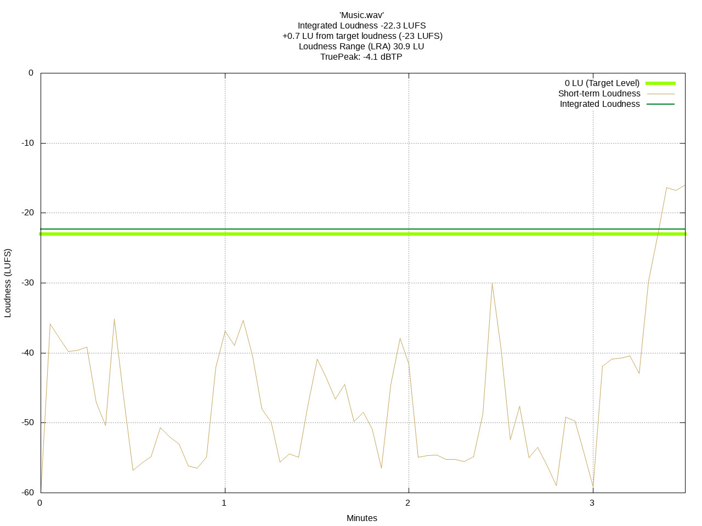

Yes :) When you install the software you can choose which method of peak measurement is used: sample peak or TruePeak.
Important notes:

This process works very well with -23 LUFS target level. But in case of this example loudness variations are too wide to handle if one chooses a very high target loudness, for example -12 LUFS. Limiting lowers the files loudness and this causes a too big change between the processing steps and clipping might occur.
Files like these needs to be prepared for a high target loudness by eliminating too wide loudness variations. FreeLCS is not a multi purpose compressor and it will not handle gracefully extreme cases like this.
FreeLCS 3.7 Supports:
FreeLCS 3.6 Supports:
FreeLCS 3.5 Supports:
FreeLCS 3.4 supports:
FreeLCS 3.3 supports:
FreeLCS 3.2 supports:
FreeLCS 3.0 supports:
FreeLCS 2.4 supports:
AppArmor is a Linux kernel security module that protects system files and directories by maintaining access right lists. Only applications that has rights to read / write / execute/ access system directories or files in a AppArmor profile will be granted access. Any other application can not access protected files / directories.
Debian 10 ships with AppArmor turned on by default. AppArmor does not affect FreeLCS installation or operation in any way as long as you create FreeLCS hotfolder to the root "/" directory or /mnt or /media or to a users home directory. Debian 10 ships with an automatic script that grants network shares defined in /etc/samba/smb.conf automatically access rights in AppArmor so that users can drop files in FreeLCS hotfolder. This script runs automatically each time samba is started.
If you enable FreeLCS to send error messages by email, then you probably sometimes get some messages that at first might seem puzzling. Here are the explanations :)
If you get the following error message, then it means that FreeLCS has encountered an error that it can not recover from and has stopped. FreeLCS starts jobs in threads that periodically writes timestamps to a file. The script "HeartBeat_Checker.py" watches this file and sends you email if one or more timestamps stop updating. This means that a thread has crashed and you need to restart FreeLCS to restore normal operation. You can restart FreeLCS either by rebooting the computer or giving this command as root on the commandline:
On systemd based distros (Debian 8 and Ubuntu 16.04and later):
systemctl restart freelcs
Subject: LoudnessCorrection Error Message
From: VirtualMachine_1@company.com
LoudnessCorrection
has stopped updating 'main_thread' timestamps, the thread has probably
crashed and a restart of the script is needed. Last thread timestamp
update happened at: 2013.11.30 at 16:34:05
LoudnessCorrection
info:
------------------------------
Commandline: /usr/bin/LoudnessCorrection.py
-configfile /etc/Loudness_Correction_Settings.pickle
IP-Addresses: 192.168.1.1
PID: 1777
LoudnessCorrection
version: 229
HeartBeat Checker info:
------------------------------
Commandline: /usr/bin/HeartBeat_Checker.py -configfile
/etc/Loudness_Correction_
PID: 1802
HeartBeat Checker version: 020
If you got the message above informing you that a FreeLCS thread has stopped updating timestamps, then you might get the following message if the problem was caused by some temporary glitch that just prevented FreeLCS from updating the timestamps in time, but did not crash FreeLCS. This message tells you that FreeLCS is working normally again.
Subject: LoudnessCorrection Error Message
From: VirtualMachine_1@company.com
All Heartbeat timestamps
started updating again at: 2014.05.10 at 23:33:49
These error messages are usually harmless and can be ignored.
The HeartBeat_Checker.py script sends this message when FreeLCS starts up. If you set up a weekly reboot for the machine, then this message greets you when FreeLCS service is up and running.
Subject: HeartBeat_Checker has started.
From: VirtualMachine_1@company.com
HeartBeat_Checker started:
2014.04.14 at 07:05:07
LoudnessCorrection info:
------------------------------
Commandline: /usr/bin/LoudnessCorrection.py -configfile
/etc/Loudness_Correction_Settings.pickle
IP-Addresses: 192.168.1.1
PID: 1683
LoudnessCorrection version: 229
HeartBeat Checker info:
------------------------------
Commandline: /usr/bin/HeartBeat_Checker.py -configfile
/etc/Loudness_Correction_
PID: 1696
HeartBeat Checker version: 020
You may see this error message if you mount FreeLCS HotFolder with the NFS protocol. This error happens when a user uses a program that creates a file on the FreeLCS disk and then unlinks it.
According to: http://serverfault.com/questions/201294/nfsxxxx-files-appearing-what-are-those Linux keeps this file available to the user while hiding the file from others. The file is renamed with a name that starts with a dot and Linux filesystem hides these files from file listings by default.
The hidden file will disappear when the user closes the program that keeps the file open.
Subject: LoudnessCorrection Error Message
From: VirtualMachine_1@company.com
2014.05.07_at_15.31.23 Error
deleting files queued for deletion [Errno 16] Device or resource busy:
'/data/LoudnessCorrection/.
2014.05.07_at_15.31.28 Error deleting files queued for
deletion [Errno 16] Device or resource busy:
'/data/LoudnessCorrection/.
LoudnessCorrection info:
------------------------------
Commandline: /usr/bin/LoudnessCorrection.py -configfile
/etc/Loudness_Correction_
IP-Addresses: 192.168.1.1
PID: 1616
LoudnessCorrection version: 229
I haven't been able to find a way to stop users from deleting files from the HotFolder without affecting other file processing. The following error message is caused when a user copies a file to the server, and the server starts processing it. Now the user deletes the file and replaces it with a file with the same name but with different size. FreeLCS notices that file size has changed during processing.
Subject: LoudnessCorrection Error Message
From: VirtualMachine_1@company.com
LoudnessCorrection info:
------------------------------
Commandline: /usr/bin/LoudnessCorrection.py -configfile
/etc/Loudness_Correction_Settings.pickle
IP-Addresses: 192.168.1.1
PID: 1616
LoudnessCorrection version: 229
This error happens when user deletes a file that FreeLCS is about to start processing. FreeLCS makes a final check before processing and notices that the file is no longer available.
From: VirtualMachine_1@company.com
2014.05.14_at_13.40.44 Error reading HotFolder file
metadata [Errno 2] No such file or directory:
'/data/LoudnessCorrection/KUN_Putkiremonttipuffi GRAF.wav'
LoudnessCorrection info:
--------------------------------------
Commandline: /usr/bin/LoudnessCorrection.py -configfile
/etc/Loudness_Correction_Settings.pickle
IP-Addresses: 192.168.1.1
PID: 1699
LoudnessCorrection version: 229
This error message can mean one of two things. If you get these messages and they are all about the same audio file, then the user has deleted the file just when FreeLCS was about to start processing it.
If you get these messages and they mention several files, then this can mean that the hard disk might be failing. I have not tried to get rid of these error messages since they might indicate a hard disk failure.
From: VirtualMachine_1@company.com
LoudnessCorrection
info:
------------------------------
Commandline: /usr/bin/LoudnessCorrection.py
-configfile /etc/Loudness_Correction_
IP-Addresses: 192.168.1.1
PID: 1773
LoudnessCorrection
version: 229
FreeLCS uses sox to do the actual loudness adjustment of files. This error message comes directly from sox and happens when file size announced in a files header does not match the actual file size. This in turn might be caused for example by a dropped network connection ending file transfer prematurely.
Subject: LoudnessCorrection Error Message
From: VirtualMachine_1@company.com
2013.12.17_at_16.15.59 Sox
error: BUU_Radslor_syskonen_degeri.
LoudnessCorrection info:
--------------------------------------
Commandline: /usr/bin/LoudnessCorrection.py
-configfile /etc/Loudness_Correction_
IP-Addresses: 192.168.1.1
PID: 1847
LoudnessCorrection
version: 229
FreeLCS uses the smb - protocol to share its Hotfolder to the network. Samba is the open source implementation of the smb - protocol that FreeLCS uses. Apple used Samba as its smb - implementation until OS X version 10.6. At this point Samba changed its license in a way that Apple didn't like and Apple decided to write their own smb implementation (smbx) from scratch. This is a huge task and there has been serious problems with OS X's interaction with other smb - implementations. OS X versions 10.7 - 10.10 all suffer from these problems.
OS X incompatibility with the smb standard causes file transfers to FreeLCS - server randomly stop with one of the following error messages (these are from OS X 10.10.4):
If you have problems described above, then try the
workarounds below and try to copy files one by to the FreeLCS server. It
seems most of the times I get these errors I have tried to transfer
multiple files in one go.
When you make the connection to FreeLCS replace "smb://" with "cifs://" at the beginning of the mount command. Save the command to the mount command list for later use.
Force all smb - connections to use the older cifs - protocol by giving this command in the Terminal. This applies only to the current user.
echo "[default]" >> ~/Library/Preferences/nsmb.conf ; echo "smb_neg=smb1_only" >> ~/Library/Preferences/nsmb.conf
Yes. FreeLCS 3.0 creates an installation log file in /var/log/. The name of the logfile is something like: freelcs_installation_log_2014.06.02_at_14.15.04.txt. The date and time in the file name corresponds to the time FreeLCS installer was run.
The logfile is meant for the developer for debugging purposes and the log lists values assigned during installation to FreeLCS internal variables. Since the variable names are quite clear and easy to understand, the user can deduce with little effort how options were set during installation. The logfile also lists variables that are not user configurable, for example: delay_between_directory_reads = 5 means FreeLCS checks in 5 second intervals for new files in the HotFolder. Options are divided to sections roughly corresponding each page in the installer program.
One example where the user might want to check the logfile is when there is need to know what email addresses are FreeLCS error messages sent to. The third section in the logfile lists email settings including email addresses error messages are sent to.
cat
/var/log/freelcs_installation_log_2014.06.02_at_14.15.04.txt
Configuration variables written to
/etc/Loudness_Correction_Settings.pickle are:
----------------------------------------------------------------------------------
freelcs_version = 3.0
os_name = ubuntu
os_version = 14.04
libebur128_path = /usr/bin/loudness
----------------------------------------------------------------------------------------------------
target_path = /mountpoint/raid-disk
language = english
english = 1
finnish = 0
hotfolder_path = /mountpoint/raid-disk/LoudnessCorrection
directory_for_temporary_files =
/mountpoint/raid-disk/00-Loudness_Calculation_Temporary_Files
directory_for_results =
/mountpoint/raid-disk/LoudnessCorrection/00-Corrected_Files
directory_for_error_logs = /mountpoint/raid-disk/00-Error_Logs
delay_between_directory_reads = 5 (How often
HotFolder is scanned for new files, time in seconds)
number_of_processor_cores = 4 (How many processor
cores to use for file processing. Each file is processed using 2
cores, so the value 4 here means 2 files can be processed at the same
time)
file_expiry_time = 28800 (How long to wait before
deleting files, time in seconds)
----------------------------------------------------------------------------------------------------
send_error_messages_by_email = True
email_sending_interval: 1800 (How long to
wait between sending error reports to admin, time in minutes)
message_recipients:
['admin1@mycompany.com','admin2.mycompany@gmail.com']
message_title: FreeLCS Error Message
send_error_messages_by_email: True
smtp_password: ******************
smtp_server_name: smtp.gmail.com
smtp_server_port: 587
smtp_server_requires_authentication: True
smtp_username: freelcs_test_user@gmail.com
use_tls: True
where_to_send_error_messages = logfile, email
send_error_messages_to_logfile = True
heartbeat = True
heartbeat_file_name = 00-HeartBeat.pickle
heartbeat_write_interval = 30 (How long to wait
between writing time stamps to the heartbeat file, time in seconds. If
time stamp updates stops, then HeartBeat_Checker sends an error
message to the admin)
----------------------------------------------------------------------------------------------------
write_html_progress_report = True
html_progress_report_write_interval = 5 (How long
to wait between updating the html progress report, time in seconds)
web_page_name = 00-Calculation_Queue_Information.html
web_page_path =
/mountpoint/raid-disk/LoudnessCorrection/00-Calculation_Queue_Information
peak_measurement_method = --peak=true (What peak
measurement method to use TruePeak or sample peak)
----------------------------------------------------------------------------------------------------
create_loudness_corrected_files = True
create_loudness_history_graphics_files = True
delete_original_file_immediately = True (When True,
then a multistream file is deleted immediately after all audio streams
have been extracted from the file)
write_loudness_calculation_results_to_a_machine_readable_file = False
unit_separator (ascii numbers) = 31
record_separator (ascii numbers) = 13, 10
----------------------------------------------------------------------------------------------------
enable_mxf_audio_remixing = True
remix_map_file_extension = .remix_map
global_mxf_audio_remix_channel_map = 2, 6, 2, 2, 2, 2, 2, 2, 2, 2, 2, 2,
2, 2, 2, 2, 2, 2, 2, 2, 2, 2, 2, 2, 2, 2, 2, 2, 2, 2, 2, 2, 2, 2, 2, 2,
2, 2, 2, 2, 2, 2, 2, 2, 2, 2, 2, 2
natively_supported_file_formats = .wav, .flac, .ogg
ffmpeg_free_wrapper_formats = wav, flac, ogg, mkv, matroska, mka
mxf_formats = mxf, mxf_d10
mpeg_wrapper_formats = mpeg, mp2, mp3, mp4, m4v, m4a, mpegts, mpegtsraw,
mpegvideo, mpeg1video, mpeg2video, vcd, svcd, dvd, vob
ffmpeg_free_codec_formats = pcm_s8, pcm_s8_planar, pcm_u8, pcm_s16be,
pcm_s16le, pcm_s16le_planar, pcm_u16be, pcm_u16le, pcm_dvd, pcm_lxf,
pcm_s24be, pcm_s24daud, pcm_s24le, pcm_u24be, pcm_u24le, pcm_f32be,
pcm_f32le, pcm_s32be, pcm_s32le, pcm_u32be, pcm_u32le, pcm_f64be,
pcm_f64le, flac, vorbis
ffmpeg_allowed_wrapper_formats = all
ffmpeg_allowed_codec_formats = all
enable_all_nonfree_ffmpeg_wrapper_formats = True
enable_all_nonfree_ffmpeg_codec_formats = True
ffmpeg_output_wrapper_format = wav
enable_mxf_wrapper = False
enable_webm_wrapper = False
enable_mpeg_wrappers = False
enable_mp1_codec = False
enable_mp2_codec = False
----------------------------------------------------------------------------------------------------
silent = True
number_of_all_items_in_dictionary = 54
config_file_created_by_installer_version = 094
----------------------------------------------------------------------------------------------------